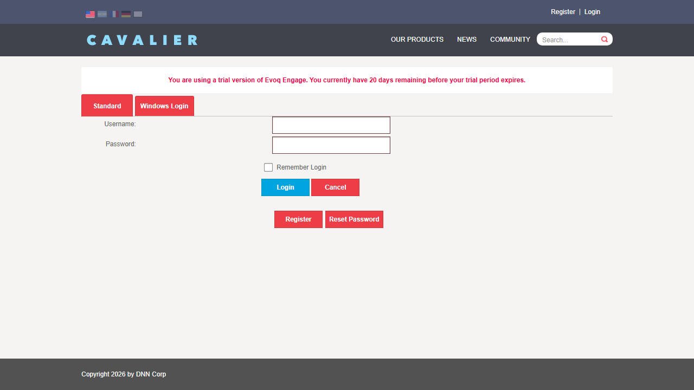

Test 1: Feature Accessibility
Status: PASS
What was tested: Verify the "Hide Login Controls?" setting is accessible in the UI.
Steps taken:
- Logged in as SuperUser (host)
- Navigated to Settings > Extensions
- Filtered to "Authentication Systems"
- Selected "DNNPro_ActiveDirectoryAuthentication"
- Clicked on "Site Settings" tab
- Verified "Hide Login Controls?" checkbox is present
Result: The "Hide Login Controls?" checkbox is accessible at the specified UI location.
Screenshot:

Test 2: Setting Persistence
Status: PASS
What was tested: Verify the setting can be saved and persists.
Steps taken:
- Ensured "Hide Login Controls?" checkbox is checked
- Clicked "Update Authentication Settings" button
- Observed status message confirming settings were processed
- Verified the checkbox remains checked after save
Result: The setting was successfully saved (indicated by LDAP status message appearing, which shows the settings were processed). The checkbox remained in its checked state after saving.
Screenshot:

Test 3: Windows Login Tab Hidden When Setting Enabled
Status: FAIL
What was tested: Verify the Windows Login tab is hidden on the login page when "Hide Login Controls?" is enabled.
Steps taken:
- Enabled "Hide Login Controls?" setting and saved
- Logged out of the application
- Navigated to the Login page (http://localhost:8081/Login)
- Observed both "Standard" and "Windows Login" tabs are still visible
Result: The Windows Login tab remains visible on the login page even after enabling the "Hide Login Controls?" setting. The feature does not appear to be functioning as expected.
Screenshot - Login page before saving settings (both tabs visible):

Screenshot - Login page after saving settings (both tabs still visible):

Issue: The "Windows Login" tab should be hidden when the "Hide Login Controls?" setting is enabled, but it remains visible. This may indicate a bug in the feature implementation or a configuration requirement that is not being met.